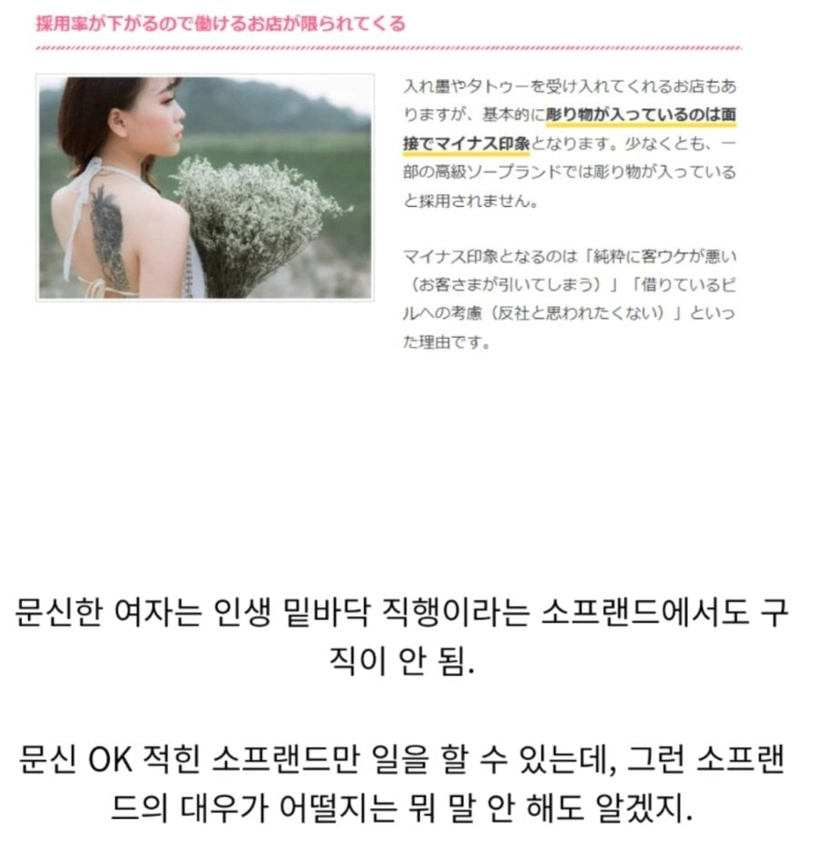
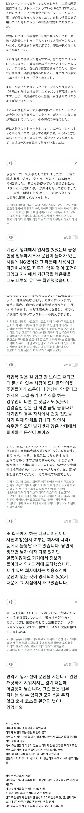

연예인은 왜빼냐?ㅋㅋ


성시경이랑 미친맛집 찍은 미요시도 얼마전에 30살기념으로 문신한거 공개해서 쟤 왜저러나 싶던데
av배우도 연기해야하는데 문신있으면 분위기 깨지니깐 안좋다던데
원조 야쿠자의 나라
친구도 일본회사 이직하는데 문신없냐고 물어보더라 ㅋㅋㅋㅋ
한국은 솔직히 문신한사람 너무 많아
인구별 문신 비율많을수록
후진국들밖에없거나 곧 망할 나라 밖에없지
국내 모 대기업에서는 문신있는 친구들이 사고를 많이 친다고
입직교육때 일부러 땀흘리는 봉사활동을 시키고 단체로 목욕탕을가서 문신검사를 한다
문신은 이게 맞지
이레즈미 그린 양아치 새끼들은 일본 가면 시비 걸릴려나?
내가 일본에 일할때도 문신 철저히 봤는데 특히 한국인들 문신있냐고 철저히 물어봐서 왜그러냐 했더니 문신 있는데도 없다고 기입하고 입사했다가 문제되는 사람들 많아서 그렇다고 하더라.
앰생인데 거짓말까지 하는 버러지들이네
한국보다 문신에 대한 생각이 관대한줄 알고 혹은 작은 크기의 문신이라 호들갑이라 생각하고 적당히 쓰고 입사했다가 문제되는 경우가 많지 않은가 생각함
그래서 유명한 AV는 문신이 하나도 없구나
이런글에 달릴법한 문신싫어하는사람까는 댓글 어디감 ㅋㅋ 뭐 인생업적이 문신안한거라는둥, 문신한사람한테 맞았냐는둥 ㅋㅋㅋ
소프에서 문신 거르는건
소프오는 찐따들이 청순한애들만 좋아해서 문신녀 싫어하는거라 그래
쟤들은 야쿠자가 실질적 위협이던게 비교적 최근까지라 더 그런가?
이슬람 같은거야 겪어보면 아는거지. 주위에 없어서 잘 모르면 선배들의 대응을 잘 보라고.
일본 사회에서 누가 문신을 주로 하는지만 생각해봐도 바로 납득이 되잖아
저거는 일본이 부럽다
문신충 = 양아치근성
얼마 전에 고척돔에서 야구보고 집에 가는 만원버스에서 겪어봤다
카드 찍고 들어가는 입구에 서 있으면서
자기 애가 같이 있다고 지나가는 사람들에게 밀지말라고 소리지르던 또라이새끼
그날 영등포쪽에서 무슨 행사를 해서 차가 밀렸는데 기사한테도 운전 조심하라고 소리지르고 사람들이 에티켓이 없네 나불거리던데 가관이었음
나중에는 뒷문쪽으로 와서 서있던데 내릴려고 뒷문쪽으로 움직이니까 밀지말라고 하길래 말없이 그냥 쳐다보고 고개 절레절레 흔들어줌
그때 손잡이 잡고 있던 팔뚝을 보니 시커먼 문신이 팔 절반을 차지하고 있더라고
버스 내리니까 같이 내린 아재가
못배운건지 지가 에티켓이 없으면서 거기 저런 놈이 시비걸어도 참고 고생많았어요
하시던게 생각나네
문신충=편견갖게됨
근데 소프랜드에서는 왜 안받아줘? 그래봐야 풍속점인데 문신유무가 뭐가 중요하지...? 오히려 선호도가 높을 것 같은데
고객들이 싫어하니까
한국도 창녀가 등판 전체에 용그려져있으면
그게 취향인 사람 말곤 안갈걸
오 그런가 난 오히려 어차피 사먹을거면 내가 못만나볼법한 아우라를 가진사람을 선호할 것 같은데 신기하구만
야쿠자 이미지가 워낙 안좋다 보니
문신 -> 야쿠자 이미지라 급이 확 낮아진대
내친구가 그러다가 취향인지호기심인지 문신녀몇명만났는데 잠깐이래 지금은개극혐함ㅋㅋ
일본 온천 대머리 커버링 문신이나 눈썹문신도 불가할까? 경험자 있으면 조언좀 ㅜ
ㄴㄴ 걱정마셈
감사
100프로 취업불가는 아님 지인도 전신이레즈미인데 현지 중견기업 잘 다니는중 물론 여름에 반팔 못입음 ㅋㅋ
AV마저도 문신 있으면 존나 마이너한 작품만 출연하게됨
애초에 일본은 문신은 야쿠자나 하는 것 이라는 인식이 오래 깔려있어서 저런거지.
한국은 그정돈 아니였고, 한국 달건이들은 오히려 문신이 없는 경우도 많아서
서로 사회적으로 보는 시각이 좀 다를 수밖에 없음
영화배우도 타투 여기저기 박혀으면 제정신이 아니라고 생각 됨. 이 배역 저 배역 여러가지해야하는데 제대로 할 생각이 없는 것으로 보여짐.
작중 배역이 성실하게 공부한 너드역인데 팔에 막 kill you 써있고..
모레시계남 ☠️☠️☠️
인간폐기물까지 가는 건 과장이 심하고, 확실한건 타투있는걸 오픈하지는 않음
타투있는 사람도 타투가 득보다 실이 많을걸 알아서 회사에서는 아예 안 들키게 한 여름에도 얇은 긴팔입음
아무래도 찐 야쿠자 있던 나라라 더 민감하게 반응하나보네
옳개된문화
편견과 차별이 한국보다 10배 심한 나라임.
특히 문신은 아예 정부가 야쿠자 떄려잡을때 일반인 문신이 싺 청소됬을 정도....
문신많으면 무서워 곁에 가기싫어
내 동생이 왼 팔에 크게 알록달록한 문신이 있음.
긴팔 입어도 보일 정도로 손까지 내려오는 문신임
정확히 기억은 안나는데 걔가 2013~5년 사이에
일본로 넘어가서 지금까지 결혼해서 애 낳고 살고있음.
직장도 잘 다니고 일도 잘 하다가 2~3년 전에
창업해서 돈도 괜찮게 번다고 하고 잘 사는데
조카가 올해 초등학교 입학했거든
갑자기 한국에 문신 지우는 걸 엄마한테 알아봐달라고
부탁하더라.
지 혼자 살때는 신경 안쓰더니 애 때문에
지우려는거 같더라
진짜옳은나라임. 내가 아무리편견안가질라해도 이레즈미 한 애들은 걍 정상이 1도없음. 걍 병신새끼들만있음
옳은거다
가슴에도 문신하고 팔에 세미 이레즈미 박던 전여친은 도대체 뭐였을까
20대 초반이었는데..
걍 ㅈㄴ 쿠자 같음

우리도 양아치, 창녀, 연예인 이 정도지 셋 중 하나가 아닌데도 문신했다? 병신 인증